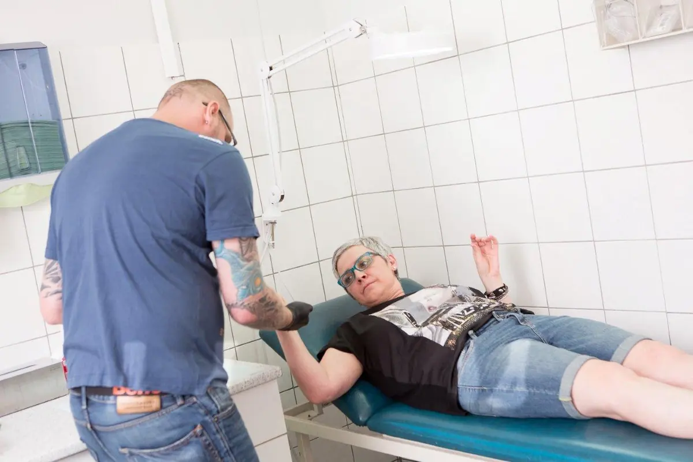

Piercing in Scheibbs — seit 1999.
Daniel Graf piercet seit 1999. Über 25 Jahre Handwerk, ruhige Hand und ehrliche Beratung — im Studio Avalon direkt im CORNER in der Hauptstraße 40. Vom klassischen Ohr-, Nasen- und Bauchnabelpiercing bis zum Intimpiercing bekommen Sie hier alle Varianten. Termine gibt es ausschließlich nach telefonischer Voranmeldung — dafür dann ohne Hektik und mit Zeit für Ihre Fragen.
Ablauf
So läuft Ihr Termin ab.
Anruf & Termin
Kurz durchklingeln, Wunsch besprechen, Termin fixieren. Piercings gibt es ausschließlich nach telefonischer Voranmeldung — dadurch entfällt Wartezeit.
Beratung am Spiegel
Platzierung, passender Erstschmuck und realistische Heilungsdauer werden vorab besprochen und am Spiegel angezeichnet. Wenn etwas anatomisch nicht sinnvoll ist, sagt Daniel das ehrlich.
Der Stich
Gearbeitet wird mit Einweghandschuhen an einem sauber vorbereiteten Arbeitsplatz — konzentriert, zügig und mit der Routine aus über 25 Jahren.
Nachsorge
Sie bekommen klare Pflegehinweise für die Heilung mit. Bei Fragen oder Unsicherheiten während der Abheilung können Sie jederzeit vorbeikommen oder anrufen.
Einblicke
Ein Blick ins Studio.





Gut zu wissen
Häufige Fragen zum Piercen.
Brauche ich einen Termin?
Welche Piercings werden gestochen?
Tut das weh?
Wie lange dauert die Heilung?
Ab welchem Alter ist ein Piercing möglich?
Was kostet ein Piercing?
Termin vereinbaren
Daniel Graf · Piercing Avalon im CORNER, Hauptstraße 40, 3270 Scheibbs. Termine ausschließlich nach telefonischer Voranmeldung.
Im selben Haus
CORNER Mode.Schuh.Treff
Mode für Damen, Herren und junge Leute — handverlesen und zum Anprobieren, direkt im selben Gebäude.